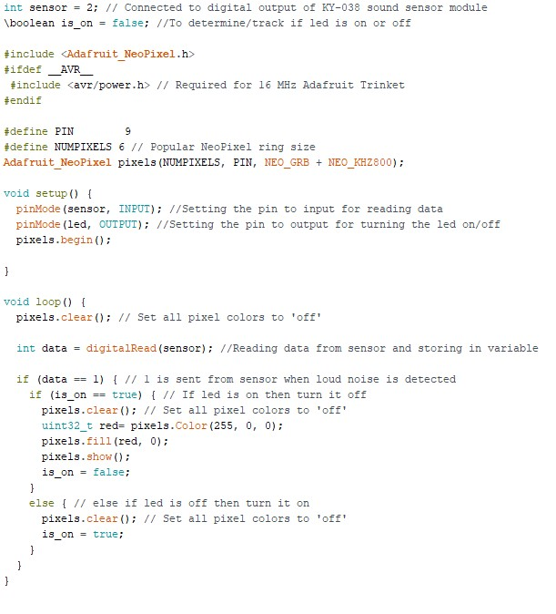

Final Project CA2 (Mood "Mood" lamp)
These days there are many mood lamps on the market but what I'm trying to make is the one and only true "mood" Lamp that will be able to properly display the mood it detects!
Disclaimer!!
This product is only in the prototype stage and is currently only able to display negative moods, watch it light up your living room with aesthetic red lights as your parents argue over their failing marriage.
Powerpoint
Click here for presentation slide Click!
{kind=link}
Original sketch
As you can see my project mainly consists of 2 components which are the box and the acrylic piece that is to be engraved with BIG CHUNGUS and then slotted into the box, I will laser cut the box and the acrylic piece and 3d print the the triangle clips to hold the acrylic piece in place.
Concept
The main concept behind this project is to make the led lights light up when sound is detected from the microphone. The led's are placed directly below the laser-cutted chungus. since the acrylic is transparent, light from the led is able to pass into the acrylic, the chungus that is engraved on the acrylic is engraved halfway, this so that when the light hits any line on the chungus, it is able to display this meme in all its grandeur.
Inspiration
I took inspiration from the Useless box kit I decided to create a "useless" sort of lamp where you have to shout for the lamp to light up, It also is the world's very first mood "mood" lamp as it acurrately displays your mood (which has to be either angry/frustrated). It is best used when you are extremely stressed for an exam and you want to release anger but still need light to study!
3d model of the box
This is the 3d model of the support box, I will place the necessary electronics in here such as the arduino board, the breadboard, and the sound sensor and Led strip in the box, The 2 traingles clips located at the top will be 3d printed
Acrylic piece
I traced over a image of big chungus and added his glorious being onto my humble draft in adobe iilustrator with the proper measurements for the base. I then imported the vector diagram as a dxf file which I used to 3d print with
Electronics
Electronics wise, I used a sound sensor, an arduino nano board, a mini breadboard, and a adafruit neopixel led strip with 6 led, all the components are linked together properly except the led strip, this is because the led stip that I use in the picture is faulty as I tried to solder on stronger wires. The original wires were rather weak and fell off pretty quickly. I felt that maybe I accidently melted some of the plastic during soldering, hence rendering this led strip useless.
Code for the electronics
The code displayed above is are the codes that I used for my arduino. For this code, I imported the adafruit neopixel library to control the led strip used in my project. I created an if else statement showing that if the sound sensor was to pick up any sound, it would shine red and when it dosnt pick up any sounds, it would turn off the led pixels
3d printed parts
These are the parts that I 3d printed. These are clips that have protruding edges that are inserted into the top of my box to hole to middle acrylic piece in place
How-To
Simply just download the folders from fusion 360 and create place the sides of the box in a dxf file. Do the same for the image on the acrylic through adobe illustrator then export the files as dxf, laser cut the components on 3 millimetre thick acrylicand glue the boxes together. place the electronics as shown above and add the code shown above as well. Finally 3d print the triangle clips before glueing them down as well. Follow these steps and anyone should be able to make their very own mood "mood" lamp.
What was completed, what was successful, what needs to be done further
The project was overall rather successful and all the parts fit properly and
the code was well written. I managed to successfully code the sound sensor and led strip while
learning a lot in the process.
What can be improved is that I could add another clip at the bottom
of the box along with the led strip so as to further balance the acrylic piece onto the led strip
and direct the light better into the acrylic piece as well, the led strip isnt working as of yet due
to soldering issues but aside from that, the product works!
What needs to be done further is to
maybe change colour for different loudness of the sound, for example it could be yellow or pink when
the user isnt screaming at the mood lamp and when they are it would light red.